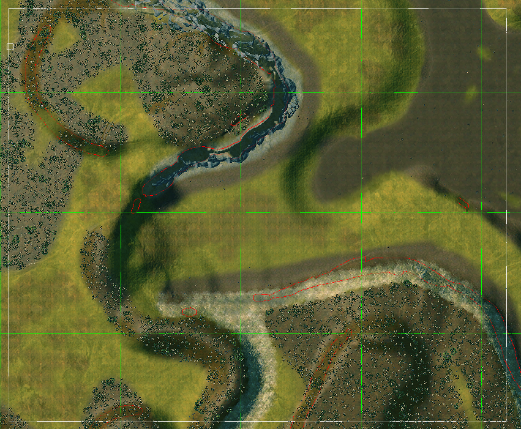
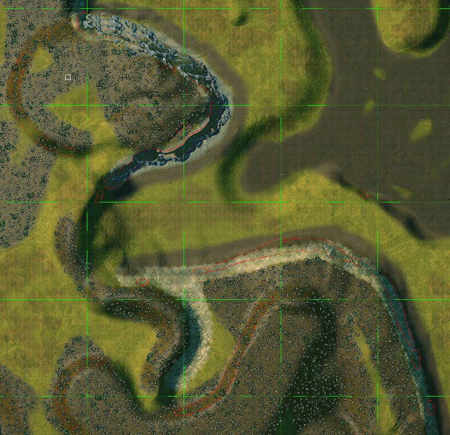
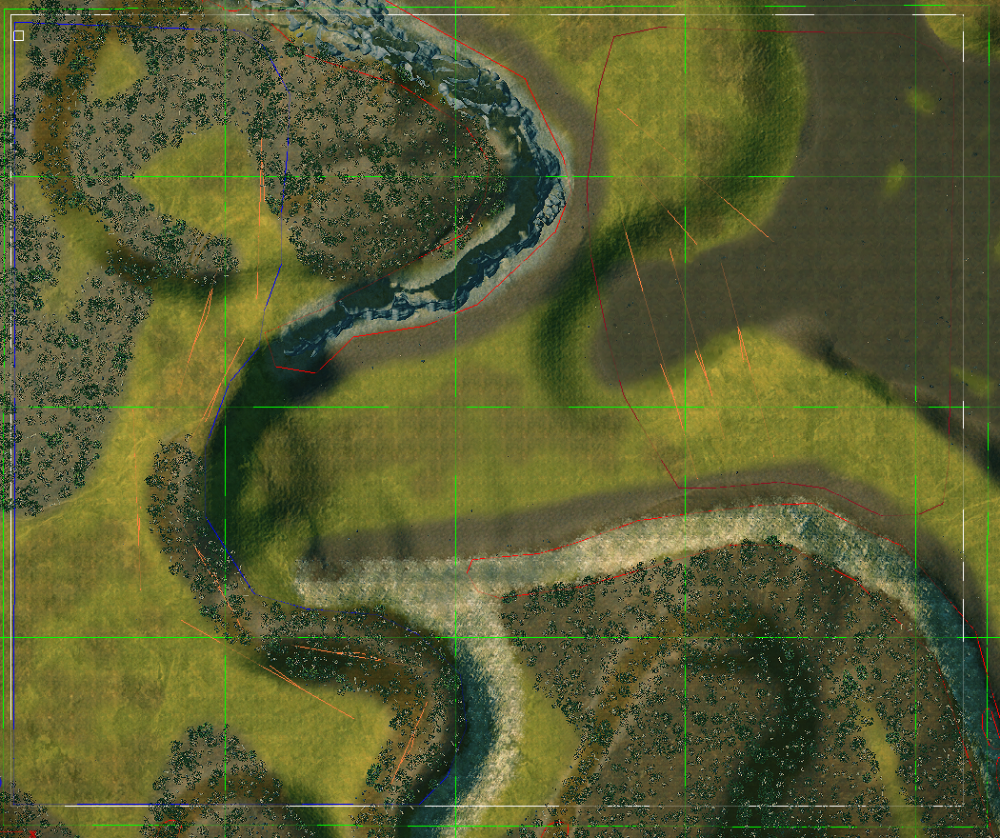

Land Battle Maps
What's a Land Battle Map?
Land maps are any normal battle map. This includes ambush maps, land battles, underground battles.... but for the sake of simplicity, we're going to focus on how to make a basic plain and simple land battle. Everything else is up to you to expand upon.
As a bonus, the map used for this tutorial can be found here. Just unpack it inside Total War WARHAMMER II\assembly_kit\raw_data\terrain\tiles\battle\_assembly_kit and it should appear in Terry's Open dialog.
Requeriments
For a land battle map to just work, you need to fulfill some requeriments:
-
Have a playable area with two deployment zones inside.
-
Each deployment zone has to have an additive region inside.
That's all. What? Did you though this was difficult? It's rather simple.
Getting our hands dirty
To create a land map, just open Terry. Then got to File/New and choose the vista (a.k.a. the borders of your map + climate, lighting,.... environment) for your map, then hit Ok. Wait and you'll see an empty plain. Paint it, tweak the height,.... change it until you get the map you want. And once that is done, let's start with the Technical part.
First, the Playable area. It's simple, click in the Playable Area button, then draw a rectangle. That's your map, where your units will fight. The borders are where they're going to retreat to. Simple, isn't? Here it's how it looks (hint: it's the white square):

Second, Go-NoGo Regions. The game automatically guesses where a unit can walk and where it cannot, but you can change it with these regions.

See those red lines? That's where the game thinks your units cannot walk (You can make them appear changing a setting in Terry). But those are imprecise, and wrong in some situations. To fix it, we have to manually set the zones we want to be walkable, and the ones that we don't want to be it. But I'm lazy, so I use the lazy method: put a Go Region around the entire Playable Area, then place the No-Go Regions manually. This is the result:

Now, the last thing, deployment zones. Just hit the Deployment Zone button, then draw one for the attacker, and one for the defender (Alliance ID, 0 is attacker, 1 defender). Like this.

That's the basics. With that, you just have a working land battle map, but there are some extras you'll need to get the best of your map.
Love, Death & AI
First, we need to add AI hints. These are lines we draw in the map that tells the AI this place is good for defending, here you can deploy your units in a line, from here reinforcements will come,... Basically, it makes the AI *understand the map. There are multiple AI hints:
- Forest: It tells the AI where the forest is, so they can get there to get extra defense from proyectiles. This one is automatically generated around forest terrain.
- Defensive hill: It tells the AI about good places to defend. Just put it around the places you want the AI to defend.
- Default deployment line: It tells the AI where to deploy his units on a line. When using this, just draw a line with just two vertex. More than that breaks this one.
- Attacker/Defender deployment line: It tells the AI where the reinforcements will form a line after arriving to the map through the closest walkable border to this line. Only used in campaign. If you got a campaign map without these and reinforcements come it may crash, or you may have no reinforcements.
So for this example we are going to put deployment and defensive hill hints, so the AI knows how to deploy and how to defend the hill. To give more variety to your maps, I recommend you to put multiple deployment hints per deployment zone, so the AI deploy differently from time to time. Here it is a screenshot with the deployment hints done:

And here is an example of the deployment hill hint:
With that, you can test our map ingame. Just hit export, what until it finishes, start the game, enable your map's mod in the launcher, and... play the game. It should popup under Land Battles.